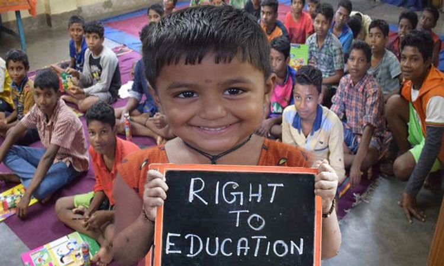
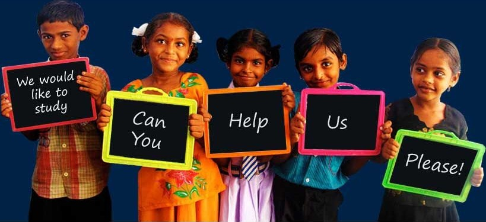

Creating brighter futures for children in need through education and guidance.
Donate NowNurturing Intellects is a non-profit organization dedicated to improving the lives of underprivileged children around the country.Our mission is to provide essential resources, education, and guidance to children in need, empowering them to build better futures for themselves and their communities.We provide financial assistance to brilliant students from economically disadvantaged backgrounds, enabling them to pursue their dreams of higher education.Our main aim is to connect underprivileged students with experienced professionals from various fields, providing them with guidance, support, and career counseling.
Our organization focuses on three key areas:
At Nurturing Intellects, our mission is to create lasting, positive change in the lives of children and their communities. We strive to break the cycle of poverty through comprehensive programs that address the root causes of inequality and provide sustainable solutions.Our approach is holistic, focusing not only on education but also on empowering communities and addressing the underlying socio-economic challenges that hinder a child's development. We believe that education is the cornerstone of progress, and by ensuring access to quality education, we can unlock the full potential of every child.Our vision is to build a future where every child, regardless of their background, has equal opportunities to realize their full potential. We strive to create an environment where education is not a privilege but a fundamental right, and where children can grow and thrive without the constraints of poverty or inequality.
We envision a world where every child, regardless of their background, has the opportunity to realize their full potential. A world where access to education, healthcare, and support services are fundamental rights, not privileges.Education, in particular, holds the power to transform lives, break generational cycles of poverty, and pave the way for a more equitable and prosperous society. In our vision, education is not merely a means to acquire knowledge but a catalyst for personal growth, critical thinking, and empowerment. We envision a future where every child has access to high-quality, inclusive, and engaging educational opportunities that foster their intellectual, emotional, and social development. Our dream is to see schools that are not just institutions of learning but nurturing environments that celebrate diversity, promote creativity, and instill a love for lifelong learning. We envision classrooms filled with passionate educators who inspire and guide students to reach their full potential, igniting their curiosity and unlocking their inherent talents.

Since our inception, Nurturing Intellects has made a significant impact on the lives of children and communities around the world:
Your support can make a significant difference in the lives of children. Here are ways you can get involved:
Together, we can create a brighter future for children in need.
Join us in our upcoming events and be a part of our mission:
Rani was born in a small village with limited access to education. Through our scholarship program, she was able to attend private school and now dreams of becoming a teacher to give back to her community.
Rahul was born in a remote village where educational opportunities were scarce. His family struggled to make ends meet, and the prospect of pursuing quality education seemed like a distant dream. However, Nurturing Intellects stepped in and changed the trajectory of Rahul's life. Through our scholarship program, Rahul was awarded a full scholarship to attend a reputable private school in the city. This opportunity not only provided him with access to quality education but also opened doors to a world of possibilities that he had never imagined. Rahul's dedication and hard work, coupled with the support from Nurturing Intellects, enabled him to excel academically. He consistently ranked among the top students in his class, and his thirst for knowledge knew no bounds.
"Nurturing Intellects has transformed our community. The children now have access to quality education and healthcare."
- Mayank Shanta, Community Leader
"The support from Nurturing Intellects has been life-changing. My children now have a brighter future ahead."
- Ishan Singh, Parent
""The mentorship program offered by Nurturing Intellects has been a turning point in my life. My mentor's guidance and encouragement have helped me overcome personal challenges and stay focused on my education. I am forever grateful for their unwavering support."
- Reena Patel,High School Student
""I was struggling to keep up with my studies due to financial constraints. Nurturing Intellects not only provided me with a scholarship but also connected me with a mentor who guided me through my academic journey. Their support has been invaluable, and I'm now pursuing my dream of becoming an engineer." "
- Rahim Khan, Middle School Student